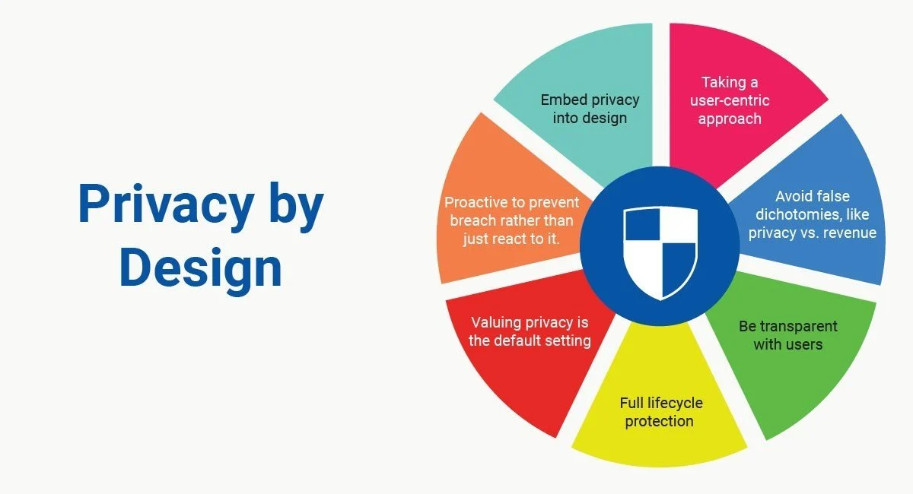
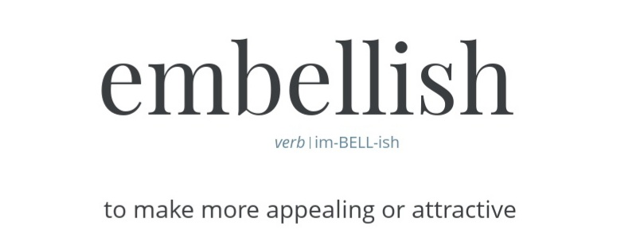
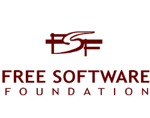

Distro Telemetry Watch
Linux Privacy by design
is having no telemetry
Linux Privacy by design
is having no telemetry
There is not one Linux but there are many different versions. This is because the operating system is free open source software , and everyone is free to download a copy from the internet, make changes and create your "own" version, and then publish that version as "distro" on the internet for others to use as free open source software.
All in all, many Linux distros have been created over the past decades, all with their own character, see further under distro & desktop characteristics.
Of course there are individuals with a very beautiful and solid distro, but over the years many distros have formed enthousiastic group of persons around them. A series of these have been transformed into foundation or company (official distros), which is necessary to function as a legal entity in society. This includes involving an office, hiring employees, entering into contracts, etc.
Many official organizations around distros and desktops exist on the basis of donations from private persons, government, organizations or (large) companies. And others official organizations around distros and desktops are commercial: make money by providing business services with their free distro and desktop. There is also advertising income.
Traditionally, within the Linux domain, factor "money" has not been the main driver. The driving force for developers is the enthusiasm for Linux itself and for the development of the GUI graphical user interface "desktop". Very important are therefore communities: groups of volunteers who contribute software to an official distro or desktop in their spare time. Many distros and desktops could not exist without a community.
Features of a distro are:
Linux kernel suitable for x86 and a growing number also for ARM processor (Mobile)
App store - on user computer package manager to choose & download Apps
Repo - repository in the cloud where Apps are ready to download
Apps - user software, almost always free open source software
List of distros
→ zie: YouTube Videotorial Package Manager & Repo's
GUI - graphical interface on user computer:
Ambient,
Budgie,
CDE,
Cinnamon,
Deepin DE,
EDE,
Elokab,
Enlightenment,
Étoilé,
GNOME,
GNUstep,
Innova,
KDE **telemetry**,
Liri Shell,
Lomiri,
Lumina,
LXDE,
LXQt,
MATE,
Maxx,
Maynard,
Mezzo,
Moksha,
Pantheon,
Phosh,
Project Looking Glass,
Razor-qt,
ROX Desktop,
Sway WM,
Sugar
theShell,
Trinity,
twm,
Unity,
Vera,
Window Maker,
Weston,
Xfce,
Zorin OS.
Many distros support one or more desktops. User can choose distro's official website with which desktops to download that distro. There are also distros that optionally have their Linux version downloaded without one specific desktop: the user selects during installation via a menu a desired desktop.
For example, distro Manjaro Architect allows the user to choose from a range of desktops during the installation process. There are also distros that, in addition to their officially supported desktops, allow users to optionally choose a (spin) community distro / desktop. So, a lot of choice, almost any combination of Linux distro with GUI desktop is possible.
For those familiar in the Linux domain, combining kernels with GUIs themselves, or choosing, downloading and installing a distro is familiar territory. But for new users it is all strange because people are used to buying a device that functions well after purchase without tinkering.
To give (potential) users that "out of the box plug and play" experience, there are more and more suppliers who sell computers with a Linux distro / desktop "factory"-installed".
There is a growing supply, and growing demand for computers with Linux out of the box because more and more people want better privacy & security without bloatware, forced updates, etc.
And right now, very sad, while the demand for Linux "ready to use" computers grows, popular Linux desktop "KDE" has decided to reduce privacy by introducing telemetry.
What was not an issue before 2020, has now because of KDE, become necesarry to point out to consumers and users distinguishing between "good" and "red-flag bad".
The following is an overview of: Hardware including out of the box Linux distro / desktop without telemetry (= good).
Product offering subject to change - check before purchase:
Dell Laptops with Linux distro Ubuntu and GNOME desktop
Dell Workstations with Linux distro Ubuntu and GNOME desktop
Kubuntu Focus Laptop with Linux distro Kubuntu and custom KDE desktop
Lenovo Personal Systems with Linux distro RedHat and GNOME desktop
Lenovo Personal Systems with Linux distro Ubuntu and GNOME desktop
Lenovo Personal Systems with Linux distro Suse and GNOME desktop
Purism Laptop with Linux distro PureOS and GNOME desktop
Purism Mini with Linux distro PureOS and GNOME desktop
Purism Phone Librem5 with Linux distro PureOS and GNOME desktop
System76 Laptop with Linux distro Pop_OS! Ubuntu based and custom GNOME desktop
System76 Desktop with Linux distro Pop_OS! Ubuntu based and custom GNOME desktop
System76 Mini with Linux distro Pop_OS! Ubuntu based and custom GNOME desktop
Product offering subject to change - check before purchase:
PinePhone with distro PostmarketOS Mobile and desktop GNOME
PinePhone with distro PostmarketOS Mobile and desktop Lomiri (*)
PinePhone with distro PostmarketOS Mobile and desktop Phosh (*)
PineTab witch distro Ubuntu Touch by UBports and desktop Qt
Slimbook with Linux distro Kubuntu
Slimbook with Linux distro ElementaryOS and desktop Pantheon
Slimbook with Linux distro Debian
Slimbook with distro Linux Mint and Desktop Cinnamon
Slimbookwith Linux distro MAX Ubuntu based and desktop MATE
Tuxedo with Linux distro Manjaro and desktop GNOME
Tuxedo with Linux distro Manjaro and Xfce desktop
(*) Mobile phone announced, now in shop for pre-order.
Mobile stands for Linux version suitable for ARM processor (instead of x86) because ARM is more or less standard for mobile devices. But there is a growing "non-specifically mobile devices" that are also equipped with an ARM processor because of increasingly faster and yet low power consumption (Apple Silicon = ARM). Anyway, for now: Mobile = ARM processor.
Buyer of a device with out of the box Linux can of course decide to remove installation by installing a distro and desktop of his choice on it.
Well-known operating systems such as Windows, macOS, Android and iOS all have built in telemetry functions. While person uses his device, it sends all kinds of data about that usage to the supplier such as Microsoft, Apple and Google.
Not often but still, some hardware suppliers include proprietary telemetry software on the computer they sell.
In almost all cases it is not clear (no transparency) which data the operating system is sending. Telemetry includes a stream of data such as OS version, hardware components such as screen format, network, disks, wifi, IP address. But also user data like website visits, Apps installed, and also content of documents (!) Etc.
This massive invasion of privacy is shocking. And possession of private data by third parties can endanger personal security, like identity fraud, bank account, home visits, you name it.
Suppliers explain in great detail that they "protect your privacy" with pages full of text almost impossible to read. But all that bla bla bla is covering up what's actually taking place. It is almost always unclear what exactly happens with the user data. Much information is sold commercially and if requested made available to governments.

Linux distros are also increasingly becoming the "go to" operating system for governments, companies, organizations and individuals, due to GDPR legislation or retention of sovereignty. According to AVG GDPR law, every organization must adhere to privacy around people. But organizations also want to protect their intellectual property. And Linux is free, which makes a huge difference in IT budget expenditure.
And Linux is the operating system for the Internet of Things (IoT): devices large and small are able to interact with users via (fiber optic) cable, WiFi, Internet, LoRa, etc.

All good, but big money is slowly but surely penetrating the Linux domain. And there are misguided developers who don't care about global outcry to protect privacy and use their talents to taint one of the last remaining "safe havens" with telemetry.
These people have ensured that telemetry is now also implemented within Linux domain. They have not taken notice of the Linux Privacy By Design adage. They made software that is at odds with (see picture on this page) the 7x privacy principles.
Google is a co-financial donor of Linux desktop KDE and, coincidence or not, suddenly spring 2020 via a regular update there is telemetry in the software: the KDE telemetry software package called “KuserFeedback”.
Even if user did not opt-in, KDE KUserFeedback telemetry package registers the use of a whole series of Apps. For example, there is the texteditor App “Kate” and dozens of other Apps more, of which the package registers:
1) Number of times the user starts the Apps, and;
2) The duration of use of Apps.
And if not opt-in, KDE KUserFeedback telemetry package registers:
3) The number of times the user start (boot) the computer, and;
4) The time duration computer usage.
KDE UserFeedback telemetry package is built solidly and robustly, and can register much more, which contributor also describes. The chance that it will happen in the future is extremely high.
KDE states that their KUserFeedback telemetry package is disabled by default during installation and that the user can choose his / her cooperation via opt-in. And keen supporters of KDE desktop, in response to critical comments, reiterate each time that "disabled by default" position, as in "don't worry, it's okay".
However, KDE uses the word "disabled" incorrectly. Because, when status of KUserFeedback is disabled, the package will nevertheless continue to function and use computer resources, it will continue to register Apps and boot, number of times used and duration in /home/user/ telemetry folder.
The only thing that doesn't happen when disabled is that user data is actively sent to KDE. But later, if user would set the telemetry to "on" (enabled), the user historical data will be sent to KDE.
As mentioned, the KDE KUserFeedback telemetry logging files are located in user home folder. And because of how Linux file permissions work, any App can access those log files. And this setup is not private.
GitHub FAQ of KUserFeedback telemetry package:
1) KUserFeedback is designed to comply with KDE Telemetry Policy, which prohibits the use of unique identifiers.
2) If you use KUserFeedback outside the scope of that policy, it is of course possible to add a custom data source that will generate and send a unique ID.
Enthusiastic KDE users point to the 1st FAQ sentence in defense of telemetry usage, posting in media comments "See, don't worry, we're doing everything in accordance to our privacy policy". But (see picture on this page) both the 1st and certainly the 2nd FAQ are against the 7x principles for privacy.
The ID function as described in FAQ 2nd sentence is indefensible. KDE has chosen to introduce this engine with the potential for extensive privacy violation, which can be deployed by third parties. It needs little imagination to realize that KDE KUserFeedback telemetry package can be used for nefarious projects.
By the way, never say never: currently KDE KUserFeedback telemetry package is spreading around the world in all kinds of distros and also on Linux out of the box devices. What if the privacy policy would suddenly be 'less stringent'? Is everyone going to install another distro on the computer or mobile? Probably not.
KDE has introduced a privacy threat currently rolling out all over the world. It can evolve into an irreversible problem at an unknown point in time.

The promotion of privacy & security is central within the FOSS domain. This is achieved by openness of source code so everyone can see exactly what the program does, and therefore no mysterious or dubious functionalities.
But KDE KUserFeedback telemetry package does not meet all FOSS criteria because, although the software is gratis, the source code made readable, but if installed then user is not free to remove the package via GUI, or make it "really" stop working.
And if user removes the KDE KUserFeedback telemetry package via GUI from system, the packagemanager removes the entire (!) desktop. After that, an average user won't be able to get computer working again (no login).
Developers have intentionally chosen for having "not necessary dependencies" to make sure removal of KDE KUserFeedback telemetry package is practically impossible. This software design is at odds with striving for 7x FOSS Privacy By Design principles.
Keep in mind, more mainstream hardware vendors are selling Linux with KDE desktop out of the box to "regular" (read: no Linux expert) users. These regular users are unable to recover from fatal error after removing KDE KUserFeedback telemetry package.
The KDE KUserFeedback telemetry package is not FOSS compliant, because new package logs what user is doing on computer, and how much time spent on it. Introducing new user behaviour logging is incompatible with FOSS strive for better privacy.
In short, KDE with their forced KUserFeedback telemetry package is wrongly using the quality assurance "free open source software (FOSS)".
Developers of KDE KUserFeedback telemetry package use the term "User Feedback" for their package name, because user feedback sounds positive. Spicing up language use is what many organizations do: naming something negative differently. Consider, for example, the word "reorganization" which is nowadays "transition", or a "setback" has become a "challenge".
So also KDE with the name of their telemetry package. The term "telemetry" rightly has a negative connotation because all other "telemetry"-operatingsystems are bad companionship.
KDE doesn't want to identify with the bad guys and has creatively come up with a positive name for their exposure. But KUserFeedback is not user feedback in its original sense, KUserFeedback is actually logging with log files. Read what is normally meant by user feedback and how to implement here >. The real name of the KDE package should have been: KUserTelemetry.
As "real user feedback" this website has through its Twitter account suggested KDE to improve:
1. If user chooses opt-in, after that install the KUserFeedback telemetry package.
2. Make it possible user removes KUserFeedback telemetry package via GUI without dependencies, so entire desktop will not disappears (no errors).
3. Remove KUserFeedback as software in the entirety of KDE desktop and handle old skool survey.
No response was received to these excellent and simple to implement changes. And that "not responding" is a concern because if KDE takes their user feedback mission seriously, they would respond to these suggestions.
With the 2020 introduction of KUserFeedback, KDE did not pay any credit to the Linux domain. Persons, companies, governments, organization; anyone who intends to switch to Linux for privacy reasons may now start wondering whether such a drastic and costly migration is worthwhile at all.
KDE KUserFeedback telemetry package has exceeded the Privacy By Design threshold. Linux distros with KDE desktop and KUserFeedback telemetry package built-in can now be compared to other operating systems such as Windows, macOS, Android and iOS, and the privacy advice is not to use these OS's.
As described above, there are many variants of distros and desktops. And not all KDE desktop distros have KUserFeedback telemetry package installed.
For the average user, it is now a quest to determine in advance whether or not the intended Linux distro has telemetry in it. And certainly for those who want to buy a device with Linux without telemetry installed out of the box, because telemetry is not advertised on the website or on packaging.
An additional problem is any distro or desktop can decide at any time to download the KUserFeedback telemetry package via GitHub to install in their version. KUserFeedback developers and KDE have opened the gate within Linux to anyone.
Given the nature of the rapidly changing Linux domain, any inventory such as the following of KDE KUserFeedback telemetry package has a temporary expiration date.
Color-coded statement for clarity:
→ Good, recommend: distro + KDE desktop without telemetry implementation (green)
→ Bad, don't use: distro + KDE with telemetry (red-flag)
→ ARM processor is "Mobile"
Distro Kubuntu
Distro MX Linux KDE
Arch Linux and KDE desktop
CentOS and epel-repo/KDE desktop
EndeavourOS and KDE desktop
EndeavourOS Mobile and KDE desktop
Fedora and KDE desktop
Fedora Mobile and KDE desktop
KDE neon
LliureX Ubuntu based and KDE desktop
Manjaro and KDE desktop
Manjaro Mobile and KDE desktop
openSUSE and KDE desktop
Solus and KDE desktop
Pinebook Pro with distro Manjaro Mobile and KDE desktop (*)
PinePhone with distro Manjaro Mobile and KDE desktop
PineTab with distro Manjaro Mobile and KDE desktop
Slimbook with distro KDEneon
Slimbook with distro Lliurex and KDE desktop
Tuxedo with distro Manjaro and KDE desktop
Tuxedo and distro openSUSE and KDE desktop
(*) ref-flag: Pine64 edition Manjaro has been announced and now in shop for pre-order. It is not clear if telemetry will be included, or they decide not to implement telemetry package. When clear this paragraph will be updated.
Buyer of a device with out of the box Linux can of course decide to remove installation by installing a distro and desktop of his choice on it. Think of a mobile phone for example Ubuntu Touch by UBports, Mobian Mobile Debian based and desktop Phosh, openSUSE Mobile and desktop GNOME, SailfischOS Mobile and desktop Lipstick, PureOS Mobile and desktop GNOME, Fedora Mobile and desktop Xfce, LXDE, MATE, Sugar on a Stick, Arch Linux Mobile and desktop GNOME, AVMultiPhone Mobile PostmarketOS based and desktop MATE.
A great deal of effort has already been made to improve privacy. Think specifically of alternative developments for mobile phones, such as LineageOS, GrapheneOS, F-Droid and Aurora store, MicroG, hardware kill switches on Librem5 and PinePhone. Also de-Googled Android Fork /e/ OS . And so on; all for better privacy.
Furthermore, in Europe (EU) the aim is to implement open source. Everything for better privacy & security and transparency. There are many initiatives worldwide, all in good direction.
While huge efforts are being made to improve privacy & security, KDE believes it is a good plan to counterintuitively introduce a new breach and threat. Given all the positive privacy efforts, it is therefore absurd that KDE has introduced telemetry "built in" into the Linux domain.
It would be better if The Linux Foundation and GNU Project and The Free Software Foundation puts any distro / desktop combo with telemetry built in on a" not allowed"-list, prohibits use of licenses on Linux, and prohibits use of name "free open source software (FOSS)".
To maintain the adage "Linux Privacy By Design" it would be better if hardware suppliers with Linux "out of the box" no longer deliver software with telemetry built in. And every official or community distro / desktop refuses to participate in telemetry in the Linux domain.
It can and will happen: mistakes, errors, new developments, comments on details about distros, GUI desktops, suppliers, products and so on. Something to report? Then please DM via Twitter account of this website. Necessary corrections will be made as soon as possible.